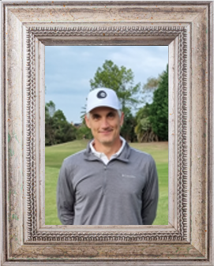
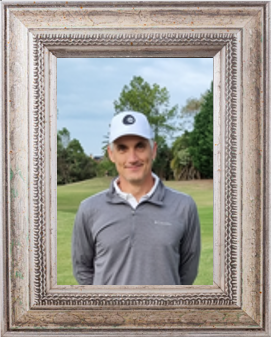
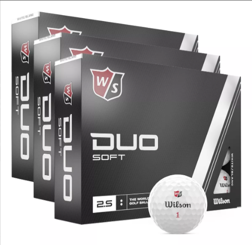

Torni

Score del mes: 64
17.02
Diegui
Score del mes: 64
02.03
- Consulta de matrículas:
En esta sección se publicará el mejor score neto del mes y el del año, con vigencia a partir del 12 de febrero.
Lo publicado abajo es a modo de ejemplo
|
Torni
Score del mes: 64 17.02 |
Diegui Score del mes: 64 02.03 |
Dada la falta de recursos, el premio al mejor score mensual será un fuerte abrazo y al mejor score anual una esquela de felicitación firmada por la HCDT.
El negro ha sido designado el padrino de esta competencia
| Pos | Player | Neto | Fedex |
|---|
Ver parciales:
Nuevo esquema con siete (7) competencias premiables y una clasificación final por acumulación de puntos obtenidos en los diversos torneos.
Distribución de premios en pelotas nuevas, pelotas con experiencia homologadas por la Comisión y puntos para el ranking Fedex.
| Torneo | Pelotas | Puntos Fedex | |||||||
|---|---|---|---|---|---|---|---|---|---|
| 0 Km | 100 Km | Tot | 1° | 2° | 3° | 4° | 5° | 6° | |
| Sierra | 6 | 24 | 60 | 20 | 15 | 10 | 8 | 5 | 2 |
| Ryder | 6 | 30 | 60 | 10 | 10 | 10 | 10 | 10 | 10 |
| Apertura | 3 | 30 | |||||||
| Clausura | 3 | 30 | |||||||
| Carilo | 6 | 24 | 60 | 20 | 15 | 10 | 8 | 5 | 2 |
| Bolilla 24 | 3 | 18 | 40 | 25 | 15 | - | - | - | - |
| Sábado Jet | - | - | 12 | 6 | 4 | 2 | - | - | - |
| Fedex | 9 | - | |||||||
| TOTAL | 36 | 156 | |||||||
Las pelotas nuevas que se entregarán como premio son Wilson Duo Soft:
La pelota de golf más suave del mundo.
Ha sido diseñada para brindar la distancia que necesita, la sensación que ama y la consistencia que exige.
Las pelotas experimentadas son analizadas y testeadas en profundidad por la Subcomisión de tecnología de la Comisión de Todo, lo que garantiza que superen satisfactoriamente el nivel de calidad exigido por este grupo de alta gama.
La participación obligatoria en las actividades de este calendario requieren de una inscripción compulsiva de cada miembro, abonando un valor de $15.000 (válidos hasta el 5 de enero 2024). Después Dios dirá.
Esta recaudación permitirá adquirir los premios con este detalle.
En un acto eleccionario ejemplar, el dia 3 de febrero de 2024, con asistencia plena de los integrantes de Bolilla Negra, en una muestra del espíritu democrático de este grupo, la lista oficialista renovó su mandato, al haber obtenido el 105% de los votos válidos.
Convocatoria. LLamado a Elecciones
Acá, a los 2 dias del año 2024 libertario, se convoca a elecciones para renovación de las autoridades de la Comisión de Todo y sus Subcomisiones.
Hasta el momento se ha presentado la lista "JUVENTUD, HONESTIDAD Y FUTURO" que va por su reelección, con importantes cambios en sus puestos directivos.
La propuesta de autoridades en esta lista es la siguiente:
Resulta evidente que en esta lista se respeta la distribución por género de los cargos ejecutivos.
"Con mi mujer nos llevamos bien. Ayer cuando llegué tomamos un café, le conté de nuestro viaje, me contó de sus actividades con hijas y nietos. Cenamos temprano, una pechuga de pollo grillada con ensalada de tomates. Agua mineral con gas. Me acosté temprano.
Dormí como el orto. Me desperté a las 2 de la mañana, me volví a dormir como a las 4, me volví a despertar 7:30. Me miré en el espejo, todo demacrado.
Tres días y medio con amigos. Comiendo como cerdos y chupando como esponjas. Por más de cuatro horas diarias, empujando un carrito por subidas y bajadas. Dulce de leche, champagne, mariscos, asado, wiskey, pizzas, etc. etc. Durante tres noches...dormí como un angelito. No me levanté ni para mear....y a las ocho ya estaba en pie para enfrentar una nueva jornada.
Decime lo que es la vida saludable."
Anónimo - 2023 (dc)
Ante situaciones de extrema peligrosidad, eliminación de derechos, amenazas a la libertad, a la independencia económica o a la libre circulación, se puede descargar este documento, que luego de los ajustes correspondientes podrá ser intervenido por los integrantes de Bolilla"